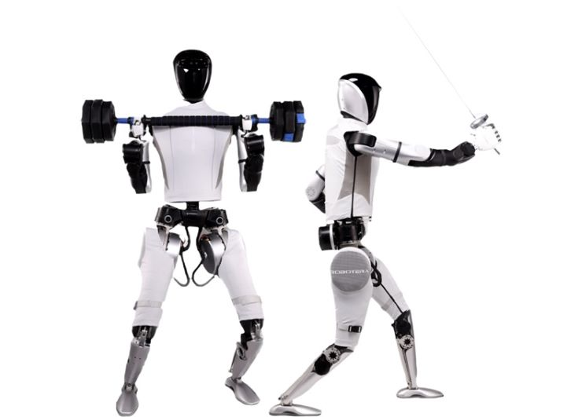
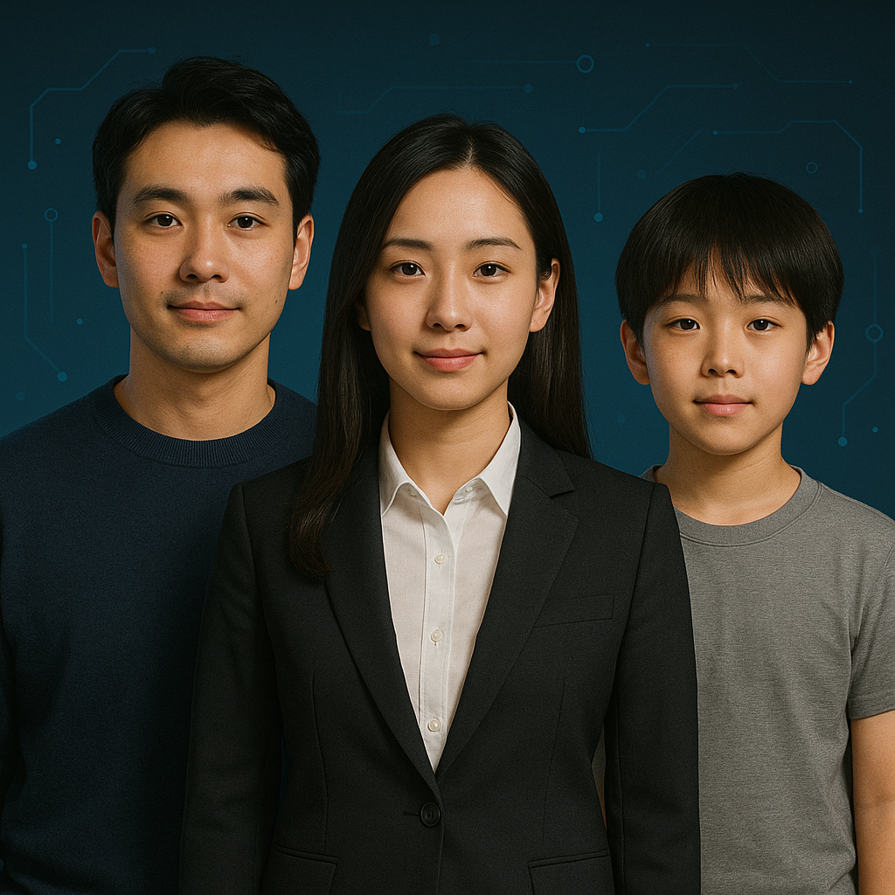

生成式 AI / 多模态技术
利用先进的生成式AI技术，支持文本、图像、音频、视频等多模态内容生成与理解。基于大语言模型（LLM）和扩散模型，为企业提供智能化内容创作、自动化设计和多模态交互解决方案。
大语言模型应用
图像生成与编辑
多模态内容理解
智能对话系统
核心优势
- 支持ChatGPT、GPT-4、Claude等主流大模型集成
- 实现文本、图像、音频、视频的跨模态理解与生成
- 提供定制化模型微调和prompt工程服务
- 大幅提升内容创作效率，降低人力成本
RAG / 企业知识智能
检索增强生成（RAG）技术结合向量数据库和大语言模型，将企业私有知识与AI能力深度融合。构建智能知识库，实现精准信息检索和智能问答，让企业数据资产发挥最大价值。
向量数据库构建
智能知识检索
企业级问答系统
知识图谱构建
核心优势
- 突破大模型知识时效性限制，实时接入企业最新数据
- 减少AI幻觉，提供可追溯的准确答案来源
- 支持多种文档格式解析（PDF、Word、Excel等）
- 保护企业数据隐私，支持私有化部署
数据与模型工程（MLOps）
提供端到端的机器学习运维解决方案，涵盖数据处理、模型训练、部署、监控全生命周期管理。建立标准化的MLOps流程，实现模型快速迭代和规模化部署，确保AI系统的稳定性和可维护性。
自动化数据流水线
模型版本管理
持续训练与部署
性能监控与优化
核心优势
- 缩短模型从开发到生产的周期，提升研发效率
- 支持A/B测试和灰度发布，降低部署风险
- 实时监控模型性能，及时发现并解决数据漂移问题
- 集成主流MLOps工具链（Kubeflow、MLflow、DVC等）
边缘 AI / IoT 与嵌入式
将人工智能能力部署到边缘设备和嵌入式系统，实现低延迟、高安全性的本地化智能决策。支持物联网设备的智能化升级，在智能制造、智慧城市、自动驾驶等场景提供实时AI推理能力。
模型轻量化优化
边缘设备部署
IoT数据智能分析
实时推理加速
核心优势
- 降低云端传输成本，实现毫秒级响应速度
- 增强数据隐私保护，敏感数据无需上传云端
- 支持离线运行，不受网络环境限制
- 兼容NVIDIA Jetson、树莓派、ARM等主流平台
AI机器人
融合计算机视觉、自然语言处理、运动控制等AI技术，打造智能机器人解决方案。从工业机器人到服务机器人，从具身智能到人形机器人，为各行业提供智能自动化升级服务。
视觉感知与识别
自然交互能力
自主导航规划
协作作业控制
核心优势
- 集成先进的多模态大模型，实现智能理解和决策
- 支持视觉SLAM、目标检测、语义分割等视觉算法
- 提供ROS/ROS2机器人操作系统开发支持
- 应用场景覆盖仓储物流、医疗康复、教育娱乐等领域

数字人 / 虚拟形象
结合语音合成、表情驱动与自然语言交互技术，构建类人数字角色与二次元虚拟形象。支持多语言对话、情绪表达与多场景应用，实现品牌传播、内容创作、客服服务等智能化升级。
类人语音与口型同步
多情绪面部驱动
实时语音对话
虚拟人形与二次元角色
核心优势
- 融合TTS语音合成、3D动画绑定、AI驱动口型匹配技术
- 支持中日英多语言语音识别与情感识别
- 提供虚拟形象定制与实时直播插件接口
- 可应用于企业客服、教育培训、虚拟偶像、数字主持等场景
